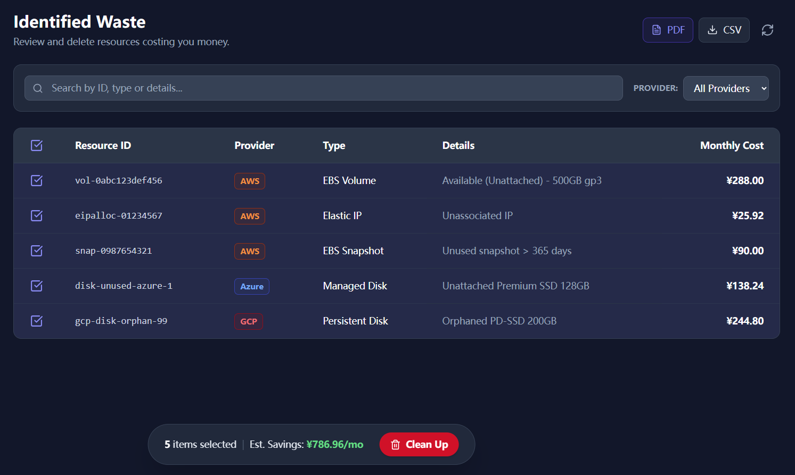

Old Disk Snapshots can create recurring waste in GCP when ownership, usage, or lifecycle rules drift. Start with evidence, confirm the resource is no longer needed, and only then move to cleanup.
Manual console check
- Log in to the GCP Console.
- Navigate to the Compute/Storage section.
- Filter for resources with status "Available" or "Unattached".
- Check age, attachment state, and owner notes before taking action.
- Review each candidate, confirm ownership and dependency risk, then clean it up through your normal change process.
Repeating this for every region is tedious, and the risk is higher when there is no evidence trail.
Local scan check
Cloud Waste Scanner scans locally and groups likely Old Disk Snapshots waste for review.

What this gives you
- Review usage, ownership, and dependency signals before cleanup.
- Scan multiple regions without switching console context.
- Local-First: Your GCP credentials never leave your computer.
Review before cleanup
Use the scan evidence to decide what is safe to change.
Download AppCommon review questions
Should I delete every flagged Old Disk Snapshots item?
No. Treat every finding as a review candidate. Confirm ownership, usage history, dependency risk, and change approval before cleanup.
Why use a local scan before cleanup?
A local scan keeps credentials on your machine and gives the team evidence it can export, review, and attach to the cleanup decision.